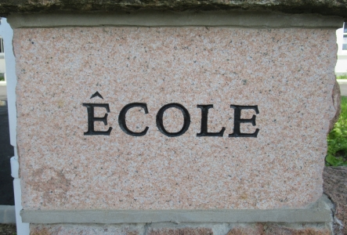

 I' y a tchiques jours, j'fus en Ville pour dithe 'Mercie et à bétôt' à la boutique tch'avait 'té ma favorie presque d'pis l'jour qu'j' c'menchis à apprendre l'Jèrriais. Je n'sais pon combein des sous qu' j'avais dépensé à la bibliotheque Thesaurus, mais ch'est probablyement pus qu'ma femme ethait voulu - et j'sais qu'j'n' sis pon l'seul tchi peut en dithe nintout! Mais i'y avait trèjous tchiquechose qu'j'voulis aver siez-mé, des viers livrets du Jersey Society in London tchi cont'naient des versets en Jèrriais, des magazines comme l' Anglo-Normandy Review dé d'vant la dgèrre, des dictionnaithes et la glossaithe dé la Société Jersiaise de 1924 - pour mé, des vrais trésors.
Mais i'y a eune fin à tous, comme nos dit Maistre Wace, et à la fîn du mais d'septembre, Thesaurus freunmit la porte pour la dreine fais. La boutique 'tait remplyi, et j'rencontris un tas d'nos anmins - i'pathait qu'j'avons tous ieu l'même idée, d'payi nos complyiments à eune pliaiche speciale. Même à chutte derniéthe visite, eyou qu'la maintchi des livres avaient déjâ 'té vendues, j'trouvis deux'trais choses qu'j'voulis - eune magazine dans tchi qu'nou peut lièthe eune articl'ye entouor la vie du Sire Erthu d'la Mare, et deux magazines du PTPN, Parlers et Traditions Populaires de Normandie, de 1984.
Quand j'rallis siez-mé, j'c'menchis à les liéthe, et j'trouvis eune pièche entouor eune réunion sus l'enseign'ment du nouormand dans l's êcoles. Un photographe nos montre Peter Germain et Phyllis Green, touos les deux à chanter 'Man Bieau p'tit Jèrri' et ch'tait êcrit d' sous qu'Peter est professeur d'Jèrriais au Collège Victoria! Dans chu temps-là, l'editeu d'la magazine eut tort, car Peter n'avait qu'la clâsse du sé, mais au jour d'aniet, ch'est vrai, viyant qu'j'avons eune clâsse pour les mousses au College et les Fillyes du Jersey College for Girls.
Chenna montre notr' progrès d'pis un an d'enseig'nment du Jèrriais. Quand nou pense, i'y a un an, i'n'y avait presque pas d'êfant tchi comprennait l' Jèrriais du tout, et aniet, j'avons pus qu'chent-huiptante tch'ont 'té ès clâsses, tchi peuvent èrpondre ès tchestions, tchi connaissent deux'trais chansons, tchi peuvent lièthent l'Jèrriais un mio - ch'est vraiment încriyabl'ye!
J'avons perdu tchiques êfants duthant l'êté pour eune variété d'raisons, mais en même temps, j'avons tréjous gangni des nouvieaux. J'avons ieu tchiques clâsses annulée - quand les mousses 'taient à faithe des visites en France, ou aut' bord.
Parmi les grands évênements du trimestre d'êté, i'y avait chein qu'il' app'laient lé Millennium Village, eyou qu' pus qu'vîngt êtudgiants chantîtent sus la strade nos deux arlevées. J'avons ieu d's inspections dans l's êcoles, les VSSEs ou Validated Schools Self-Evaluation, tchi nos dit qu'chein qu'j'finmes dans nos classes s'conforme a un haut nivé. Geraint Jennings prînt part dans eune conféthence à Paris entouor l'enseign'ment des langues minoritaithes, et des savants vîntent nos visiter - Mari Jones, professeu du Français à l'université d'Cambridge, Julia Sallabank, eune Dgèrnesiaise, tchi êtudie pour san doctorat à Oxford, et Rachel Skeet, êtudgiante à l'univèrsité d'Newcastle.
I'y avait etout les distchussions dans l's Etats entouor les sous pour continnuer les leçons, eyou qu'l'Conmité d'Finance nos rasseuthit qué, même qu'i' n'supportîtent l'Conmité d'Educâtion, j'îthaimes les sous pour les préchaines chînq ans comme j'avons d'mandé, et au jour d'aniet, not' av'nin est pus cliai.
Chu trimestre, j'avons c'menchi nos clâsses ès êcoles s'gondaithes, et lé nombre des maitres et maîtresse s'est haûchi. Parmi les nouvieaux, j'avons comme déjâ mentionné, Peter Germain, mais i'y a étout Enid de Gruchy, aîdgi par Amelia Perchard à St Martin, Percy Le Masuthi auvec Margaret Davey à Ste Mathie, Winston Le Brun auve les c'menchants à Grouville - à 8.15 lé matîn! Jé voudrais les r'mèrcier bein des fais pour nos aver donner d'lus temps.
Pour finni, et pour vos montrer qu'la majorité d's êfants sont vraiment emportés pour l'Jèrriais, Jenny, tchi n'pouôrrait pon continnuer à apprendre l'Jèrriais ès Tchennevais viyant qu'ma clâsse n'est pon convenabl'ye, m'téléphonit eune séthée pour m' d'mander s'i' 'tait pôssibl'ye d'éraller à l'êcole du Mont Nicolle - ou m'dit qu' sus sa bike, ou pouorrait y être justement en temps pour la leçon.
Et n'oublie pon l'Eisteddfod au mais d'novembre, eyou qu'j'avons chînquante-chînq êfants tchi veulent prendre part dans deux nouvieaux clâsses.
Et nou m'dit qu'i'y en a acouo tchi disent qu'nou n'pouôrrait pon ravigotter la langue!
Tony Scott Warren
Viyiz étout: